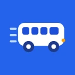

Case study · Personal project
BusBuddy
One login fans out into three role-specific apps — an admin fleet console, a parent live-tracker, and a driver companion — over one shared Firebase backend, unified by live GPS tracking and QR attendance.
The problem
Schools, drivers, and parents have no shared, real-time picture of where the school bus is or who’s on board — so everyone works from a different, stale story.
- Parents have no reliable way to know when the bus is actually arriving, turning every morning into guesswork.
- Schools juggle buses, drivers, routes, and students across disconnected spreadsheets and phone calls.
- Attendance on the bus is manual and error-prone, with no dependable record of who boarded.
What I built
BusBuddy connects all three roles around one shared backend — live GPS, route progress, and attendance, each surfaced in a purpose-built app.
Real-time GPS tracking
Drivers broadcast location; parents and admins watch buses move on a live map (flutter_map / OpenStreetMap) with route polylines, stop markers, and last-updated staleness chips.
One login, three apps
A single Firebase login reads your role and routes you to the Admin, Parent, or Driver app — three tailored experiences over one data layer.
Admin fleet console
CRUD for buses, drivers, students, routes and contacts, plus bus↔driver assignment, all from one dashboard.
QR attendance
Drivers scan a QR code to mark students present, creating a dependable boarding record per trip.
Reports & analytics
Fleet occupancy, attendance rate, and per-route breakdowns rendered with fl_chart.
Light & dark, everywhere
A full light/dark theme system across all three apps, with push notifications via Firebase Messaging and OneSignal.
Screenshots
One login, three apps — here’s how each role sees BusBuddy. Tap any screen to view it full size.
Admin · Fleet console
Parent · Live tracker
Driver · Companion
How it works
A single Firebase-authenticated login reads the user’s role and calls appForRole() to mount one of three apps — all sitting on one shared, typed data layer.
ThemeExtension palettes drive light/dark.Outcome
One Flutter codebase and one login fan out into three purpose-built role apps — admin, parent, and driver — unified by live GPS tracking and QR attendance over a shared, typed repository layer. Built solo, end to end: the three apps, the Firebase backend, and the light/dark design system.
The source lives in a private repository and the app isn’t published to any store — it runs on a live Firebase backend with seeded demo data.